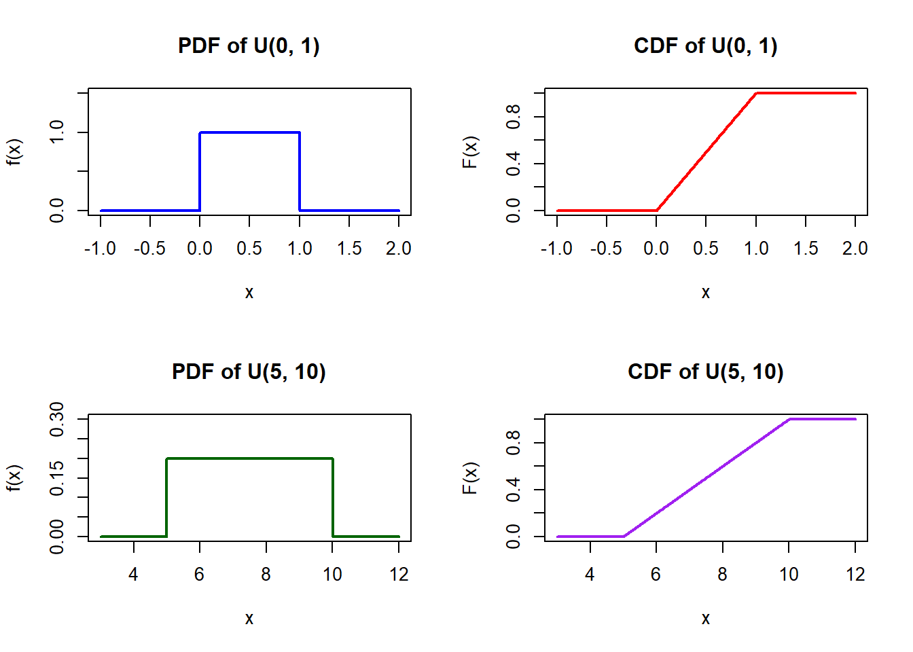

A continuous rv $X$ with a probability density function (pdf) given by
$$f(x) = \frac{1}{b - a} ; \quad a \le X \le b$$
is said to follow a Uniform distribution, denoted $U(a, b)$.
i.e., if the probability of any possible value of $X$ to occur is the same, then $X$ may follow a Uniform Distribution.Continuous Distributions
As in the case of discrete variables, continuous random variables may be described by known probability density functions (PDFs).
Continuous Distribution
Uniform distribution
Exponential distribution
Gamma distribution
Chi-Square distribution
Normal distribution
Uniform Distribution (Continuous)
- Uniform distribution is one of the simplest continuous distributions.
Uniform distribution: Graph of PDF and CDF
(Refer to visual rectangular pdf plot and linear increasing cdf plot from \(a\) to \(b\))

Uniform distribution: Properties
If random variable \(X\) has a uniform distribution with parameter \(a, b\), \(U(a, b)\), then:
MGF: \[M_X(t) = E(e^{tX}) = \frac{e^{tb} - e^{ta}}{t(b - a)}\]
Mean (expected value) \[\mu = E(X) = \frac{(a + b)}{2}\]
Variance \[Var[X] = \sigma^2 = \frac{(b - a)^2}{12}\]
Uniform distribution: Derivation of MGF
\[f(x) = \frac{1}{b - a}, \quad a \le x \le b.\] \[\begin{align*} M_X(t) &= E(e^{tX}) = \int_{a}^{b} e^{tX} f(x) dx \\ &= \int_{a}^{b} e^{tX} \frac{1}{(b - a)} dx \\ &= \frac{1}{b - a} \int_{a}^{b} e^{tX} dx \\ &= \frac{1}{(b - a)} \left[ \frac{e^{tX}}{t} \right]_{a}^{b} = \frac{e^{tb} - e^{ta}}{t(b - a)} \end{align*}\]
Uniform distribution: Derivation of mean \(E[X]\)
\[f(x) = \frac{1}{b - a}, \quad a \le x \le b\] \[\begin{align*} \mu &= E(x) = \int_{a}^{b} x f(x) \ dx \\ &= \int_{a}^{b} x \cdot \frac{1}{b - a} \ dx \\ &= \frac{1}{b - a} \int_{a}^{b} x \ dx = \frac{1}{b - a} \left[ \frac{x^2}{2} \right]_{a}^{b} \\ &= \frac{1}{2(b - a)} [x^2]_{a}^{b} \\ &= \frac{b^2 - a^2}{2(b - a)} \\ &= \frac{(b - a)(b + a)}{2(b - a)} = \frac{b + a}{2} \end{align*}\]
Uniform distribution: Derivation of Variance \(Var[X]\)
\[\sigma^2 = E(x^2) - (E(x))^2,\]
\[\begin{align*} E(x^2) &= \int_{a}^{b} x^2 f(x) \ dx = \frac{1}{b - a} \int_{a}^{b} x^2 \ dx \\ &= \frac{1}{b - a} \left[ \frac{x^3}{3} \right]_{a}^{b} = \frac{1}{3(b - a)} [x^3]_{a}^{b} \\ &= \frac{b^3 - a^3}{3(b - a)} \\ &= \frac{(b - a)(b^2 + ab + a^2)}{3(b - a)} \\ &= \frac{b^2 + ab + a^2}{3}, \text{ then}\\ \sigma^2 &= \frac{b^2 + ab + a^2}{3} - \left( \frac{b + a}{2} \right)^2 \\ &= \frac{b^2 + ab + a^2}{3} - \frac{b^2 + 2ab + a^2}{4} \\ &= \frac{4b^2 + 4ab + 4a^2 - 3b^2 - 6ab - 3a^2}{12} \\ &= \frac{b^2 - 2ab + a^2}{12} = \frac{(b - a)^2}{12} \end{align*}\]
Let $X$ have the PDF
$$f(x) = \frac{1}{100}, \quad 0 < x < 100$$
So $X \sim U(0, 100)$. Find the mean and variance.
**Solution:**
Identify the parameters: $a = 0$ and $b = 100$.
- **Mean:**
$$\mu = \frac{a + b}{2} = \frac{0 + 100}{2} = 50$$
- **Variance:**
$$\sigma^2 = \frac{(b - a)^2}{12} = \frac{(100 - 0)^2}{12} = \frac{10000}{12} \approx 833.33$$
If $X$ is uniformly distributed over $(0, 10)$, calculate the probability that:
(a) $X < 3$
(b) $X > 6$
(c) $3 < X < 8$
**Solution: **
Given that $X \sim U(0, 10)$, the probability density function (PDF) is:
$$f(x) = \frac{1}{10 - 0} = \frac{1}{10}, \quad 0 < x < 10$$
For a continuous uniform distribution on $(a, b)$, the probability for any sub-interval $[x_1, x_2] \subseteq [a, b]$ is given by:
$$P(x_1 < X < x_2) = \int_{x_1}^{x_2} \frac{1}{b - a} \, dx = \frac{x_2 - x_1}{b - a}$$
a. $P(X < 3)$$$P(X < 3) = \int_{0}^{3} \frac{1}{10} \, dx = \frac{3 - 0}{10} = \frac{3}{10} = 0.3$$
b. $P(X > 6)$$$P(X > 6) = \int_{6}^{10} \frac{1}{10} \, dx = \frac{10 - 6}{10} = \frac{4}{10} = \frac{2}{5} = 0.4$$
c. $P(3 < X < 8)$$$P(3 < X < 8) = \int_{3}^{8} \frac{1}{10} \, dx = \frac{8 - 3}{10} = \frac{5}{10} = \frac{1}{2} = 0.5$$
Buses arrive at a specified stop at 15-minute intervals starting at 7 A.M. That is, they arrive at 7:00, 7:15, 7:30, 7:45, and so on. If a passenger arrives at the stop at a time that is uniformly distributed between 7:00 and 7:30, find the probability that he waits:
(a) less than 5 minutes for a bus.
(b) more than 10 minutes for a bus.
**Solution**
Let $X$ denote the number of minutes past 7:00 that the passenger arrives at the bus stop. Since the passenger arrives uniformly between 7:00 and 7:30, $X \sim U(0, 30)$, with probability density function:
$$f(x) = \frac{1}{30 - 0} = \frac{1}{30}, \quad 0 \le x \le 30$$
Buses arrive at $X = 0$, $X = 15$, and $X = 30$ minutes past 7:00
A passenger waits less than 5 minutes if they arrive within 5 minutes prior to any bus departure:
- Between 7:10 and 7:15 ($10 < X < 15$)
- Between 7:25 and 7:30 ($25 < X < 30$)
The probability is the sum of these two intervals:
$$
\begin{aligned}
P(\text{Wait} < 5) &= P(10 < X < 15) + P(25 < X < 30) \\
&= \int_{10}^{15} \frac{1}{30} \, dx + \int_{25}^{30} \frac{1}{30} \, dx \\
&= \frac{15 - 10}{30} + \frac{30 - 25}{30} \\
&= \frac{5}{30} + \frac{5}{30} = \frac{10}{30} = \frac{1}{3} \approx 0.3333
\end{aligned}
$$
b. Waiting more than 10 minutesA passenger waits more than 10 minutes if they arrive within the first 5 minutes after a bus leaves, leaving more than 10 minutes until the next one:
- Between 7:00 and 7:05 ($0 < X < 5$)
- Between 7:15 and 7:20 ($15 < X < 20$)
- The probability is:
$$\begin{aligned}
P(\text{Wait} > 10) &= P(0 < X < 5) + P(15 < X < 20) \\
&= \int_{0}^{5} \frac{1}{30} \, dx + \int_{15}^{20} \frac{1}{30} \, dx \\
&= \frac{5 - 0}{30} + \frac{20 - 15}{30} \\
&= \frac{5}{30} + \frac{5}{30} = \frac{10}{30} = \frac{1}{3} \approx 0.3333
\end{aligned}$$Continuous Uniform Distribution \(U(a,b)\)
A continuous random variable \(X\) has a Uniform distribution if the probability of any possible value occurring is the same over the interval \([a, b]\).
- PDF: \(f(x) = \frac{1}{b-a}\) for \(a \le x \le b\)
- Mean: \(\mu = \frac{a+b}{2}\)
- Variance: \(\sigma^2 = \frac{(b-a)^2}{12}\)
Exponential Distribution \(Exp(\theta)\)
- If the pdf of random variable \(X\) is given by: \[f(x) = \frac{1}{\theta} e^{-x/\theta}, \quad 0 \le X < \infty\] Then \(X\) is said to have exponential distribution, \(Exp(\theta)\).
- Modeling lifetime of electronic / electrical – memoryless property.
- Normally associated with “waiting-time” - many application of waiting-time in real-life situation.
- Example:
- to estimate time between patients (allocation of doctors)
- time between breakdown in machines/computers (technician/engineers required at a certain time)
- time between customers at checkout counters (counters to open/cashiers on duty)
- The parameter \(\theta\), describes the mean waiting time until the first / next occurrences.
Exponentialdistribution: Graph of PDF and CDF

Exponential Distribution: Properties
If \(X\) is a random variable having Exponential distribution with parameter (\(\theta\)), then:
MGF: \[M_X(t) = \frac{1}{1 - \theta t}\]
Mean: \[\mu = E[X] = \theta\]
Variance: \[\sigma^2 = Var[X] = \theta^2\]
Exponential Distribution: Derivation of MGF
\[\begin{align*} M_X(t) = E(e^{tX}) &= \int_{0}^{\infty} e^{tX} \frac{1}{\theta} e^{-x/\theta} dx = \frac{1}{\theta} \int_{0}^{\infty} e^{-x(\frac{1}{\theta} - t)} dx \\ &= \frac{1}{\theta} \int_{0}^{\infty} e^{-x(\frac{1}{\theta} - t)} \left( \frac{-(\frac{1}{\theta} - t)}{-(\frac{1}{\theta} - t)} \right) dx \\ &= \frac{\frac{1}{\theta}}{(\frac{1}{\theta} - t)} \int_{0}^{\infty} e^{-x(\frac{1}{\theta} - t)} \left( -(\frac{1}{\theta} - t) \right) dx \\ &= -\frac{1}{(1 - \theta t)} \left[ e^{-x(\frac{1}{\theta} - t)} \right]_{0}^{\infty} \\ &= -\frac{1}{(1 - \theta t)} [0 - 1] = \frac{1}{(1 - \theta t)} \end{align*}\]
Exponential Distribution: Derivation of Mean
The \(k\)-th raw moment is given by evaluating the \(k\)-th derivative of the MGF at \(t = 0\):
\[E[X^k] = M_X^{(k)}(0)\] To find the first moment (the mean, \(E[X]\)), take the first derivative of \(M_X(t)\) with respect to \(t\) using the chain rule: \[ \begin{aligned} M_X'(t) &= \frac{d}{dt} \left[ (1 - \theta t)^{-1} \right] \\ &= -1 \cdot (1 - \theta t)^{-2} \cdot \frac{d}{dt}(1 - \theta t) \\ &= -1 \cdot (1 - \theta t)^{-2} \cdot (-\theta) \\ &= \theta (1 - \theta t)^{-2} = \frac{\theta}{(1 - \theta t)^2} \end{aligned} \] Evaluate at \(t = 0\)Set \(t = 0\) to obtain the mean \(\mu = E[X]\): \[ \begin{aligned} E[X] &= M_X'(0) \\ &= \frac{\theta}{(1 - \theta \cdot 0)^2} \\ &= \frac{\theta}{1^2} \\ &= \theta \end{aligned} \]
Exponential Distribution: Derivation of Variance \(Var[X]\)
Let \(X \sim \text{Exp}(\theta)\) with probability density function: \[f(x) = \frac{1}{\theta} e^{-x/\theta}, \quad x \ge 0 \quad (\theta > 0)\] The variance is defined as: \[\text{Var}(X) = E[X^2] - (E[X])^2\]
Step 1: Find the Second Derivative of \(M_X(t)\)
From the previous derivation, the moment generating function and its first derivative are: \[M_X(t) = (1 - \theta t)^{-1}, \quad t < \frac{1}{\theta}\] \[M_X'(t) = \theta(1 - \theta t)^{-2}\] To find the second raw moment \(E[X^2]\), differentiate \(M_X'(t)\) with respect to \(t\) using the chain rule: \[ \begin{aligned} M_X''(t) &= \frac{d}{dt} \left[ \theta (1 - \theta t)^{-2} \right] \\ &= \theta \cdot (-2)(1 - \theta t)^{-3} \cdot \frac{d}{dt}(1 - \theta t) \\ &= \theta \cdot (-2)(1 - \theta t)^{-3} \cdot (-\theta) \\ &= 2\theta^2 (1 - \theta t)^{-3} = \frac{2\theta^2}{(1 - \theta t)^3} \end{aligned} \] Step 2: Evaluate \(E[X^2]\) at \(t = 0\) \[ \begin{aligned} E[X^2] &= M_X''(0) \\ &= \frac{2\theta^2}{(1 - \theta \cdot 0)^3} \\ &= \frac{2\theta^2}{1^3} \\ &= 2\theta^2 \end{aligned} \] Step 3: Compute \(\text{Var}(X)\)Substitute \(E[X] = \theta\) and \(E[X^2] = 2\theta^2\) into the variance formula: \[ \begin{aligned} \text{Var}(X) &= E[X^2] - (E[X])^2 \\ &= 2\theta^2 - (\theta)^2 \\ &= 2\theta^2 - \theta^2 \\ &= \theta^2 \end{aligned} \] (Note: In the rate parameterization where \(\lambda = \frac{1}{\theta}\) and \(M_X(t) = \left(1 - \frac{t}{\lambda}\right)^{-1}\): \[M_X''(t) = \frac{2}{\lambda^2}\left(1 - \frac{t}{\lambda}\right)^{-3} \implies E[X^2] = M_X''(0) = \frac{2}{\lambda^2}\] \[\text{Var}(X) = \frac{2}{\lambda^2} - \left(\frac{1}{\lambda}\right)^2 = \frac{1}{\lambda^2}\]
Let $X$ be the rv the length of time in minutes between calls to 911 in a small city. Suppose the reasonable probability model for $X$ is given by
$$f(x) = 1/20 e^{-x/20}, \quad 0 \le x < \infty$$
a. Show that
$$\int_{S} f(x) dx = 1$$
b. Show $P(X > 20) = 0.368$
**Solution:**
The support of $X$ is $S = [0, \infty)$. This is an exponential distribution with parameter $\theta = 20$ (or rate $\lambda = \frac{1}{20} = 0.05$).
a. Show that $\int_{S} f(x) \, dx = 1$**
We evaluate the improper integral over the support $S = [0, \infty)$:
$$
\begin{aligned}
\int_{S} f(x) \, dx &= \int_{0}^{\infty} \frac{1}{20} e^{-x/20} \, dx \\
&= \lim_{b \to \infty} \int_{0}^{b} \frac{1}{20} e^{-x/20} \, dx
\end{aligned}
$$
Find the antiderivative:
$$\int \frac{1}{20} e^{-x/20} \, dx = -e^{-x/20}$$
Now, evaluate the definite integral using the Fundamental Theorem of Calculus:
$$
\begin{aligned}
\lim_{b \to \infty} \left[ -e^{-x/20} \right]_{0}^{b} &= \lim_{b \to \infty} \left( -e^{-b/20} - \left(-e^{0}\right) \right) \\
&= \lim_{b \to \infty} \left( -\frac{1}{e^{b/20}} + 1 \right) \\
&= 0 + 1 = 1
\end{aligned}
$$
Thus, the total probability over the sample space is equal to $1$, verifying that $f(x)$ is a valid probability density function.
b. Show that $P(X > 20) \approx 0.368$Using the survival function (tail probability):
$$
\begin{aligned}
P(X > 20) &= \int_{20}^{\infty} \frac{1}{20} e^{-x/20} \, dx \\
&= \lim_{b \to \infty} \left[ -e^{-x/20} \right]_{20}^{b} \\
&= \lim_{b \to \infty} \left( -e^{-b/20} - \left(-e^{-20/20}\right) \right) \\
&= 0 + e^{-1} \\
&= \frac{1}{e} \approx 0.367879
\end{aligned}
$$
Rounding to three decimal places:$$P(X > 20) \approx 0.368$$
Exponentialdistribution: Relationship with Poisson distribution
Special relationship: Exponential dist can be derived from Poisson rv.
Recall: Poisson rv is defined as the number of events in a unit interval e.g. the number of customers arriving in one hour.
Interval \(\rightarrow\) The time/space/distance.
The unit between one event to next event is also another random variable of interest, and because the distance / time/space are continuous variables, their distribution is continuous distribution.
Exponentialdistribution:
Suppose we let \(\rightarrow\) X : No occurrences in a unit interval. Then \(X\) can be described by a Poisson with mean \(\lambda\). And let Y : Waiting time until the first changes /occurrences.
Then \(Y\) is a continuous rv which can be described by an Exponential distribution. \(Y \sim \exp(1/\lambda)\), and \(E(Y) = 1/\lambda\).
NOTE: Earlier we use \(\theta\), where \(\theta = 1/\lambda\)
- So if \(\lambda\) is the mean number of changes/occurrences in a unit interval, then \(1/\lambda\) is the mean waiting time for the first change.
e.g. if \(\lambda = 5\) per minute, then \(1/\lambda = \theta = 1/5\).
This relationship is proven by the following theorem:
THM: Suppose a series of events satisfying the Poisson model are occurring at a rate of \(\lambda\) per unit time.
Let rv \(Y\) be “the interval between consecutive events”.
Then \(Y\) has exponential distribution with mean \(E(Y) = 1/\lambda\)
\[f(y) = \lambda e^{-\lambda y}, \quad y > 0\]
Customer arrive in a certain shop according to an approximate Poisson process at a mean rate of 20 per hour. What is the probability that the shopkeeper will have to wait more than 5 minutes for the arrival of the first customer?
**Solution**
- Let $x$ denote the waiting time in minutes until the first customer arrives and note that $\lambda = \frac{1}{3}$ is the expected number of arrivals per minute.
- Thus, Code snippet# Expected number of arrivals per minute (lambda) = 20 arrivals / 60 mins = 1/3
- We want P(X > 5)
$$
\begin{aligned}
P(X > 5) &= \int_{5}^{\infty} \frac{1}{3} e^{-\frac{1}{3}x} \, dx \\
&= \left[ -e^{-\frac{1}{3}x} \right]_{5}^{\infty} \\
&= 0 - \left( -e^{-\frac{1}{3}(5)} \right) \\
&= e^{-5/3} \\
&\approx e^{-1.6667} \\
&\approx 0.1889
\end{aligned}
$$
Suppose that the total mileage an electric vehicle (EV) battery pack can operate before experiencing critical cell failure is exponentially distributed with a mean lifespan of $\theta = 150{,}000$ miles (or failure rate $\lambda = \frac{1}{150{,}000}$ per mile). A logistics delivery company purchases a pre-owned EV fleet vehicle that has already accumulated $100{,}000$ miles without any battery failure.
(a) Using the **memoryless property** of the Exponential distribution, find the probability that this vehicle can complete a long-haul cross-country commercial route of $5{,}000$ miles without requiring a battery pack replacement.
(b) How does this probability compare to the probability that a *brand-new* EV battery completes the same $5{,}000$-mile trip?
(c) What can be said if the true underlying lifespan distribution of the EV battery pack is **not exponential** (e.g., following a Weibull distribution with an increasing failure rate due to electrochemical wear and aging)?
Let $X$ denote the total mileage until battery failure, where $X \sim \text{Exp}\left(\lambda = \frac{1}{150{,}000}\right)$.
We seek the conditional probability that the battery lasts at least another $5{,}000$ miles given that it has already survived $100{,}000$ miles:
$$P(X > 105{,}000 \mid X > 100{,}000)$$
By the **memoryless property** of the Exponential distribution:
$$P(X > s + t \mid X > s) = P(X > t)$$
Setting $s = 100{,}000$ and $t = 5{,}000$:
$$
\begin{aligned}
P(X > 105{,}000 \mid X > 100{,}000) &= P(X > 5{,}000) \\
&= e^{-\lambda t} \\
&= e^{-\frac{5{,}000}{150{,}000}} = e^{-\frac{1}{30}} \\
&\approx 0.9672
\end{aligned}
$$
# R Verification
lambda <- 1 / 150000
prob_a <- 1 - pexp(5000, rate = lambda)
print(paste("Probability:", round(prob_a, 4)))[1] "Probability: 0.9672"Gamma Distribution \(Gamma(\alpha, \theta)\)
Defined as the waiting time for the \(\alpha\)-th occurrence. It describes phenomena that are skewed to the right.
- PDF: \(f(x) = \frac{1}{\Gamma(\alpha)\theta^\alpha} x^{\alpha-1} e^{-x/\theta}\) for \(x \ge 0\)
- Parameters: \(\theta\) (scale) and \(\alpha\) (shape).
- Mean: \(\mu = \alpha\theta\)
- Variance: \(\sigma^2 = \alpha\theta^2\)
Chi-Squared Distribution \(\chi^2(r)\)
A special case of a Gamma distribution where \(\alpha = r/2\) and \(\theta = 2\). It is mainly used in statistical significance tests (like goodness of fit).
- Parameter: \(r\), a positive integer specifying the degrees of freedom.
- Mean: \(\mu = r\)
- Variance: \(\sigma^2 = 2r\)
Normal Distribution \(N(\mu, \sigma^2)\)
The most widely used model, giving a symmetric bell-shaped curve.
- PDF: \(f(x) = \frac{1}{\sqrt{2\pi}\sigma} e^{-\frac{(x-\mu)^2}{2\sigma^2}}\) for \(-\infty \le x \le \infty\)
- Mean: \(\mu\)
- Variance: \(\sigma^2\)
- MGF: \(M_X(t) = e^{\mu t + \frac{\sigma^2 t^2}{2}}\)
Standard Normal Distribution
To compute probabilities for the normal distribution, we standardize \(X\) to \(Z\): \[Z = \frac{X-\mu}{\sigma} \sim N(0,1)\]
To find the probability \(P(a \le X \le b)\): \[P(a \le X \le b) = P\left(\frac{a-\mu}{\sigma} \le Z \le \frac{b-\mu}{\sigma}\right)\]